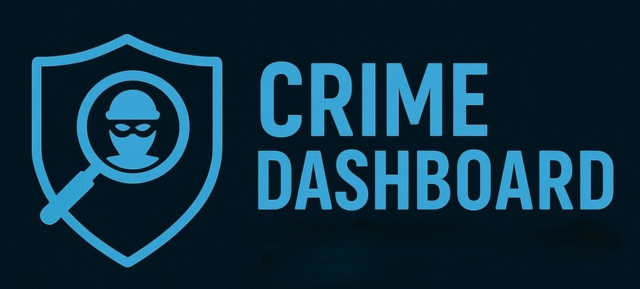
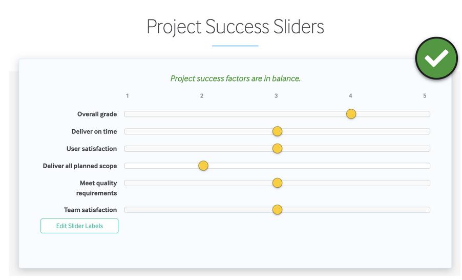

Why We Exist
Our platform is designed to be both easy to use and highly detailed, offering clear insights into current and past crimes within the Philadelphia area.
By combining live updates with historical data, we help users stay informed and aware of the patterns shaping their communities.
At the core of our mission is innovation — finding smarter ways to protect, defend, and ultimately save lives. Through the analysis of past and live incidents, we aim to support proactive decision-making and foster a safer, more secure future for everyone.


To build a city where safety is strengthened by information. We envision a future where open access to data drives awareness, collaboration, and trust between citizens and local authorities.

Our mission is to combine data and design to deliver clear, real-time insights on crime patterns throughout Philadelphia.
We aim to transform raw data into meaningful visuals and alerts — so that every resident can make informed decisions about their safety and community.

Our definition of success is to work coherently as a team and ensure we finish with a well-designed website that displays all the data users need in a clear and accessible way.

We’re a diverse group of developers, data scientists, and designers passionate about technology for good.
Together, we believe that transparency is key to trust and that every Philadelphian deserves access to reliable safety information.
- Balat Melik — Back end
- Jeremy Ramos — Front end
- Shaun Kim — Front end
- Shayan Idrees — Back end